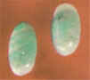
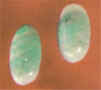

| Жадеит. |
||||
|
Химическая формула:
NaAl[Si2O6] - пироксен, силикат натрия и
алюминия. |
|||

|
||||
|
 | |||
Жад
Название свое жад получил от
испанского «piedra de ijada», что означает дословно
«поясничный камень» - поскольку жад считали
талисманом, излечивающим болезни почек. Оно
восходит ко временам покорения испонцами
Центральной и Южной Америки. Через Европу это
название распространилось по всему миру.
Соответствующее китайское «ию» не получило
распространения. В 1863 году французским
исследователем Демуром было установлено, что под
названием «жад», относящемуся к необычайно
вязкому камню, известному уже 7 тысячелетий, на
самом деле следует понимать два разных минерала
– нефрит и жадеит. В торговле жадом неправильно
именуют многие непрозрачные зеленые камни.
Различить нефрит и жаддеит на глаз вообще не
легко, что дает основание употреблять
собирательный термин "жад" для обоих
минералов. В доисторическое время благодаря
своей невероятной вязкости жад применялся во
всех частях света для изготовления оружия,
инструмента и орудий труда. В Китае широко
использовался для создания предметов культа. В
доколумбовой Америке жад ценился дороже золота,
однако после вторжения испанских конкистадоров
высокое искусство резьбы по этому камню было
утрачено, в Китае же резьба практикуется до сих
пор. Раньше там обрабатывался только нефрит,
сейчас - и жадеит из Бирмы. Нефрит и жадеит
используют для изготовления ювелирных и
кабинетных украшений.
|
| Жадеит. |
||||
|
Химическая формула:
NaAl[Si2O6] - пироксен, силикат натрия и
алюминия. |
|||
|
|
||||
|
 | |||
| Нефрит. | |||
|
|||
| |
|||
 |
|||
© В. Шуман "Мир камня. Драгоценные и
поделочные камни".
© Н. В. Белов "Все о камнях и амулетах"
Критика